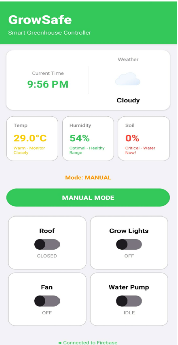
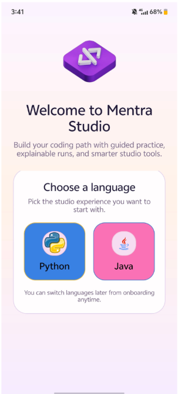
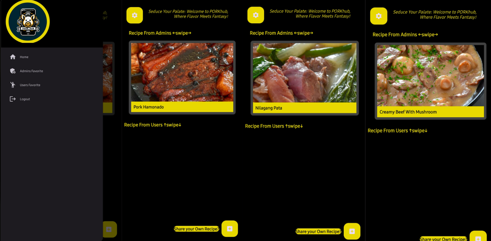
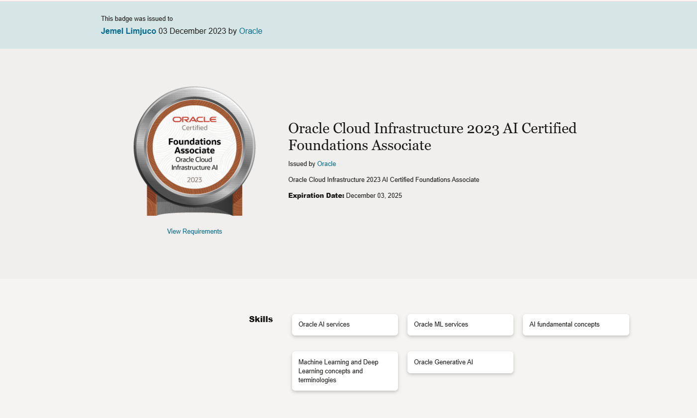
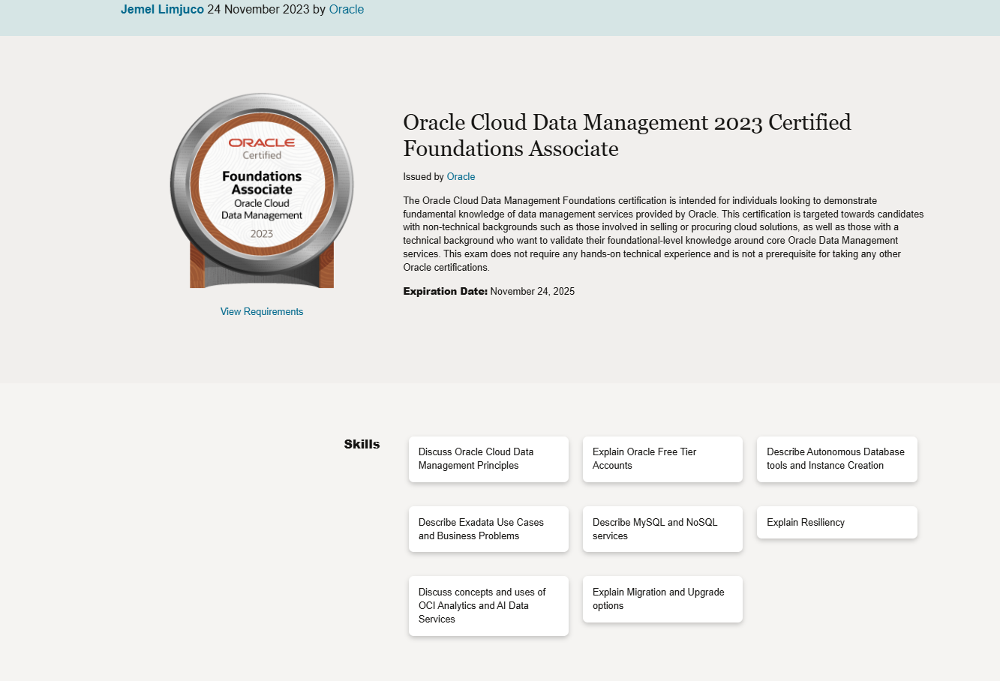
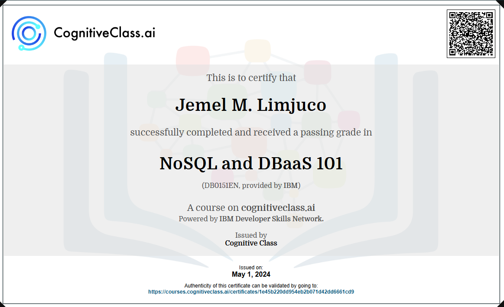
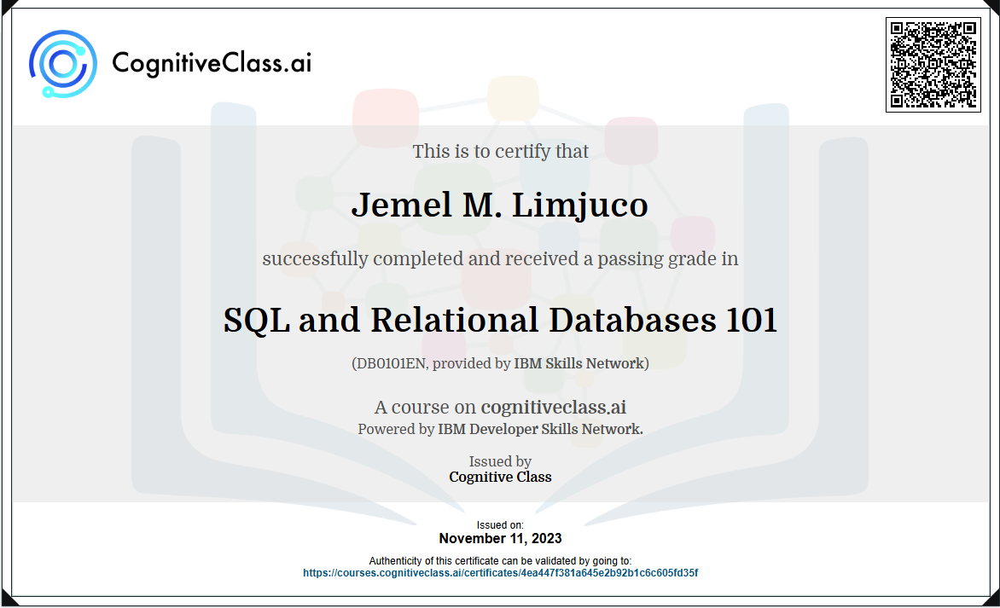

🙋🏻♂️ About Me
I am an aspiring IT Helpdesk Technician currently pursuing my BS in Information Technology. I am building my technical foundation and hands-on skills to excel in the field.
I am passionate about providing excellent technical support, resolving hardware and software issues efficiently, and ensuring smooth digital operations for end-users. With my strong communication skills and ability to collaborate within team environments, I am ready to contribute to high-quality service delivery and adapt quickly to the latest technologies.
Looking ahead, I aim to deepen my understanding of business IT processes and eventually transition into technical decision-making, ensuring that infrastructure solutions are efficient, reliable, and aligned with company goals.
⭐ Projects

IoT Smart Greenhouse Controller - "GrowSafe"
A comprehensive smart greenhouse management system featuring real-time monitoring of temperature, humidity, and soil conditions. Integrated with Firebase for cloud data storage and remote control capabilities. Includes manual control mode for roof, grow lights, fan, and water pump systems with status indicators and environmental health alerts.

Interactive Learning Platform - "Mentra Studio"
An educational coding platform designed to build programming skills through guided practice. Users can choose between Python and Java learning paths with interactive exercises, explainable runs for better understanding, and smarter studio tools to enhance the learning experience. Features language switching capability for flexible skill development.

Recipe Sharing Application - "PORKhub"
A dynamic recipe sharing platform with a focus on pork cuisine. Features admin-curated recipes and user-contributed content with swipe navigation for easy browsing. Includes user authentication, favorite management, and an intuitive interface for discovering new recipes. Built with a modern tech stack for seamless user experience and recipe sharing.
💻 Technologies
Languages
- Java
- JavaScript
- HTML & CSS
- PHP (Basic)
Frameworks
- Backend: SpringBoot
- Frontend: ReactJs (Basic)
Database
- Relational: MySQL
- Non-Relational: MongoDB
🎓 Certificates

Oracle Cloud Infrastructure 2023 AI Certified Foundations Associate

Oracle Cloud Data Management 2023 Certified Foundations Associate

NoSQL and DBaaS 101

 GitHub
GitHub